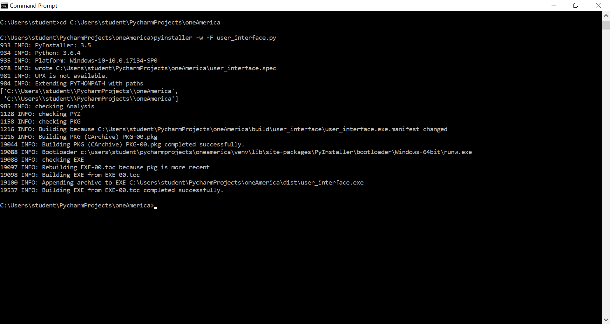
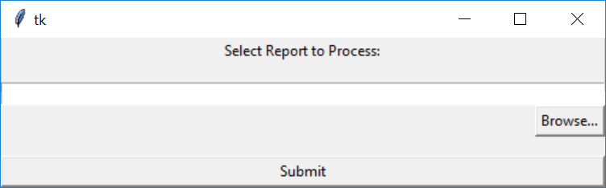

This project was inspired by a previous summer experience that I had, where I filed electronic statements. The statements were scanned in as a series of approximately 14 pages, and would need to be parsed by the client the statement pertained to, which was usually 2 pages per person. Then, the document was saved as a separate file and was named according to the name of the client, the account number and the date. This process was completed on a monthly basis and took up a good portion of my summer. I completed this task after my first semester as a Computer Science student, and I understood that the process could be automated, but I did not have enough underlying knowledge of computing in order to complete the task. I had only taken the introductory course, since most of my ciriculum as a first-year student consisted of general education requirements.
However, this past summer, I felt that I had enough knowledge after two additional years of Computer Science to take on this project. To define the scope of the project, I focused on three main system requirements:
I initially wanted to use Java to create the project, since I though having experience creating a desktop applicaiton using Java would be a good preparation for the future. However, upon diving further into the nature of the project, I realized python would be the best application to use. Python already had pdf processing libraries that would allow me to extract pages easily. In addition, the files themselves were scanned into PDF documents, rather than being typed out and converted from word. This meant that I would have to use character recognition in order to parse the files. Thus, I felt that Python's use in image recognition and machine learning would be most useful.
While Python was the best choice for the backend, unfortunately the GUI that python provides are not as user friendly as I would have hoped. I primarily used tkinter for my UI. While I found that this system had everything I needed, I felt that the User Interface that I created was not up to my standards. In the future, if I had more time to work on this project, I would have used a html browser to develop the front end and have the backend run off of python. However, the tkinter worked fine for a Minimum Viable Product for my desktop application with a project deadline of one month.
The desktop application's major bottleneck is the image recognition, which requires alot of proccessing power to read a 14 page document. I used the timing function within python to optimize the elapsed real time of the execution. However, I continuously found that the application would get caught in the image recongition phase, which will only improve as the hardware the program runs on will improve. However, I was able to optimize the application using regular expressions to parse the document, as well as using linear time operations. In addition, I wanted to create error handling in order to complete as much work as possible for the end user. I found that sometimes the OCR (optimal character recognition) algorithm sometimes had difficulty reading the text if the scan had noise. Thus, as a result, the system would crash when the document could not parse the individual's name. In order to solve this problem, I added filler text to the name of the file if the system could not recognize the name of the client, month, or client code. My hope would be that the user would quickly check the names of the files after the process was complete, and would change the file paths accordingly. The OCR fails only about 5% of the time, and there are multiple places that these data fields appear in the document which provide a second chance to be able to parse the document's critical information.
In order to convert my scripts into an executable that would run independent of python and the libraries it used, I used PyInstaller, which allowed me to run easy command lines to complete this process. After using pip to install pyinstaller and update python, I ran the two following lines to create a final executable.
The -F flag condenses the executable into one file and the -w flag does not open the command prompt window when the executable is opened. I chose these two flags because I felt that they would make the user experience easier for the end user. After these command prompts are run, the executable is put into the 'dist' folder of the project. This executable opens the user interface of the project, which will activate the backend work I did while developing. When the executable is run, the following dialog box opens up, prompting the user to select a pdf document to parse.
As I mentioned earlier, the GUI for Python did not give me as much flexability as I would have like when developing the front end of the applicaiton, in terms of colors and placement of freatures. However, this was enough to create what I needed in terms of functionality, which was the focus of the project in such a short timeframe that I gave myself to work on the project. The user selects the file path of the pdf, which opens a file browser window, which is native to the operating system, then clicks submit when the report is ready to process. The file then automatically saves the end projects in the same file path as the selected file. In the future, if time permits, I would like to add a few features to improve the experience. I would like the user to be able to customize where they want the new files to be saved to the computer, as well as prompt a response message to the user when the process is completed. Overall, this project challenged both my data science skils as well as my programming skills in creating a desktop application. The main challenge I faced was with the User Interface and the short timeframe, where I focused on functionality.